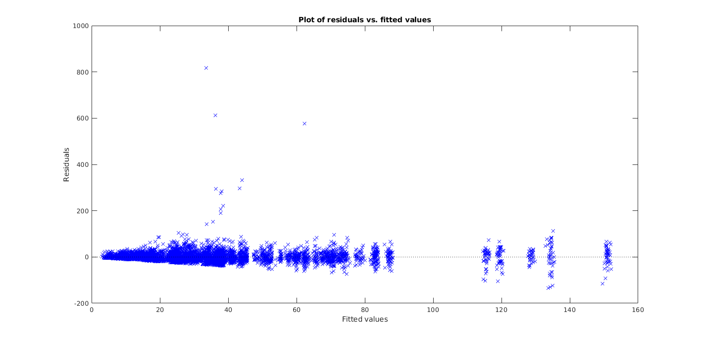

Contents
parameters and data files
load('gap_correlation_analysis_singleunits.mat'); activitythresh = 6;%zscore from shuffled
data format
each row contains information about the FR, duration of target element,
%volume and duration of adjacent elements for a single trial in a specific %burst/sequence/unit/bird. head(dattable)
ans =
8×12 table
dur spikes unittype activity birdid unitid seqid burstid vol1 vol2 dur1 dur2
______ ______ ________ ________ ________ _______________________________________ ________ _______ ______ ______ ______ ______
30.812 6.4488 1 31.125 'G26G23' 'G26G23_MU_5_29_2006_1530_1540_PCA_CH0' 'abcddd' 1 10.215 11.931 57.812 65.438
29.219 23.87 1 31.125 'G26G23' 'G26G23_MU_5_29_2006_1530_1540_PCA_CH0' 'abcddd' 1 10.016 11.99 56.219 68
29.188 11.992 1 31.125 'G26G23' 'G26G23_MU_5_29_2006_1530_1540_PCA_CH0' 'abcddd' 1 10.653 12.493 57.25 69.906
28.625 14.892 1 31.125 'G26G23' 'G26G23_MU_5_29_2006_1530_1540_PCA_CH0' 'abcddd' 1 9.9448 11.754 58.469 63.094
28.594 42.346 1 31.125 'G26G23' 'G26G23_MU_5_29_2006_1530_1540_PCA_CH0' 'abcddd' 1 10.011 11.82 53.781 71.469
28.312 10.009 1 31.125 'G26G23' 'G26G23_MU_5_29_2006_1530_1540_PCA_CH0' 'abcddd' 1 12.208 12.612 64.156 68.5
28.031 11.436 1 31.125 'G26G23' 'G26G23_MU_5_29_2006_1530_1540_PCA_CH0' 'abcddd' 1 9.9215 11.672 56.625 68.562
28 23.646 1 31.125 'G26G23' 'G26G23_MU_5_29_2006_1530_1540_PCA_CH0' 'abcddd' 1 9.8448 11.609 54.906 59.438
Is there a significant relationship between firing rate and duration of target element?
%filter cases where activity is above threshold and normalize predictors % activecases = find(dattable.activity>=activitythresh); subset = dattable(activecases,:); cases = unique(subset(:,{'unitid','seqid','burstid'})); for i = 1:size(cases,1) ind = find(strcmp(subset.unitid,cases(i,:).unitid) & strcmp(subset.seqid,cases(i,:).seqid) & subset.burstid==cases(i,:).burstid); dur = subset(ind,:).dur; dur = (dur-mean(dur))/std(dur); subset(ind,:).dur = dur; end
test whether to add random effect of seqid on intercept
formula = 'spikes ~ dur + burstid'; mdl1 = fitlme(subset,formula); formula = 'spikes ~ dur + burstid + (1|unitid:seqid)'; mdl2 = fitlme(subset,formula)
mdl2 =
Linear mixed-effects model fit by ML
Model information:
Number of observations 9221
Fixed effects coefficients 3
Random effects coefficients 126
Covariance parameters 2
Formula:
spikes ~ 1 + dur + burstid + (1 | unitid:seqid)
Model fit statistics:
AIC BIC LogLikelihood Deviance
83790 83826 -41890 83780
Fixed effects coefficients (95% CIs):
Name Estimate SE tStat DF pValue
'(Intercept)' 37.149 3.6486 10.182 9218 3.2144e-24
'dur' -0.51703 0.2311 -2.2373 9218 0.025293
'burstid' -1.4316 2.5665 -0.55782 9218 0.57698
Lower Upper
29.997 44.301
-0.97004 -0.064024
-6.4625 3.5992
Random effects covariance parameters (95% CIs):
Group: unitid:seqid (126 Levels)
Name1 Name2 Type Estimate Lower
'(Intercept)' '(Intercept)' 'std' 27.883 24.603
Upper
31.6
Group: Error
Name Estimate Lower Upper
'Res Std' 22.036 21.718 22.359
%Std of the random effect on intercept is large
compare(mdl1,mdl2,'CheckNesting',true) % Adding random effect of seqid on intercept improves model fit
ans =
THEORETICAL LIKELIHOOD RATIO TEST
Model DF AIC BIC LogLik LRStat deltaDF pValue
mdl1 4 90484 90512 -45238
mdl2 5 83790 83826 -41890 6695.6 1 0
%Plot residuals, exclude outliers for better fit before testing whether to %add more random effects figure;plotResiduals(mdl2,'fitted'); i = find(residuals(mdl2)>150);
%test whether to add random effect of seqid on slope. YES formula = 'spikes ~ dur + burstid + (1|unitid:seqid)'; mdl1 = fitlme(subset,formula,'exclude',i); formula = 'spikes ~ dur + burstid + (1|unitid:seqid) + (dur-1|unitid:seqid)'; mdl2 = fitlme(subset,formula,'exclude',i); compare(mdl1,mdl2,'CheckNesting',true)
ans =
THEORETICAL LIKELIHOOD RATIO TEST
Model DF AIC BIC LogLik LRStat deltaDF pValue
mdl1 5 78203 78239 -39096
mdl2 6 78179 78221 -39083 26.356 1 2.8386e-07
%test whether to add random effect of unitid on intercept. YES formula = 'spikes ~ dur + burstid + (1|unitid:seqid) + (dur-1|unitid:seqid)'; mdl1 = fitlme(subset,formula,'exclude',i); formula = 'spikes ~ dur + burstid + (1|unitid:seqid) + (dur-1|unitid:seqid) + (1|unitid)'; mdl2 = fitlme(subset,formula,'exclude',i); compare(mdl1,mdl2,'CheckNesting',true)
ans =
THEORETICAL LIKELIHOOD RATIO TEST
Model DF AIC BIC LogLik LRStat deltaDF pValue
mdl1 6 78179 78221 -39083
mdl2 7 78032 78082 -39009 148.22 1 0
%test whether to add random effect of unitid on slope. NO formula = 'spikes ~ dur + burstid + (1|unitid:seqid) + (dur-1|unitid:seqid) + (1|unitid)'; mdl1 = fitlme(subset,formula,'exclude',i); formula = 'spikes ~ dur + burstid + (1|unitid:seqid) + (dur-1|unitid:seqid) + (1|unitid) + (dur-1|unitid)'; mdl2 = fitlme(subset,formula,'exclude',i); compare(mdl1,mdl2,'CheckNesting',true)
ans =
THEORETICAL LIKELIHOOD RATIO TEST
Model DF AIC BIC LogLik LRStat deltaDF pValue
mdl1 7 78032 78082 -39009
mdl2 8 78032 78089 -39008 1.8908 1 0.16911
%test whether to add random effect of birdid on intercept. NO formula = 'spikes ~ dur + burstid + (1|unitid:seqid) + (dur-1|unitid:seqid) + (1|unitid)'; mdl1 = fitlme(subset,formula,'exclude',i); formula = 'spikes ~ dur + burstid + (1|unitid:seqid) + (dur-1|unitid:seqid) + (1|unitid) + (1|birdid)'; mdl2 = fitlme(subset,formula,'exclude',i); compare(mdl1,mdl2,'CheckNesting',true) %BIC is not lower with mdl2
ans =
THEORETICAL LIKELIHOOD RATIO TEST
Model DF AIC BIC LogLik LRStat deltaDF pValue
mdl1 7 78032 78082 -39009
mdl2 8 78028 78085 -39006 6.4036 1 0.011389
%test whether to add random effect of birdid on slope. NO formula = 'spikes ~ dur + burstid + (1|unitid:seqid) + (dur-1|unitid:seqid) + (1|unitid)'; mdl1 = fitlme(subset,formula,'exclude',i); formula = 'spikes ~ dur + burstid + (1|unitid:seqid) + (dur-1|unitid:seqid) + (1|unitid) + (dur-1|birdid)'; mdl2 = fitlme(subset,formula,'exclude',i); compare(mdl1,mdl2,'CheckNesting',true)
ans =
THEORETICAL LIKELIHOOD RATIO TEST
Model DF AIC BIC LogLik LRStat deltaDF pValue
mdl1 7 78032 78082 -39009
mdl2 8 78034 78091 -39009 1.6007e-10 1 0.99999
%final model formula = 'spikes ~ dur + burstid + (1|unitid:seqid) + (dur-1|unitid:seqid) + (1|unitid)'; mdl = fitlme(subset,formula,'exclude',i) mdl.Rsquared
mdl =
Linear mixed-effects model fit by ML
Model information:
Number of observations 9209
Fixed effects coefficients 3
Random effects coefficients 270
Covariance parameters 4
Formula:
Linear Mixed Formula with 4 predictors.
Model fit statistics:
AIC BIC LogLikelihood Deviance
78032 78082 -39009 78018
Fixed effects coefficients (95% CIs):
Name Estimate SE tStat DF pValue
'(Intercept)' 50.129 8.2505 6.0759 9206 1.2816e-09
'dur' -0.61545 0.25115 -2.4505 9206 0.014283
'burstid' -5.8606 1.8571 -3.1557 9206 0.0016062
Lower Upper
33.957 66.302
-1.1078 -0.12314
-9.501 -2.2202
Random effects covariance parameters (95% CIs):
Group: unitid:seqid (126 Levels)
Name1 Name2 Type Estimate Lower
'(Intercept)' '(Intercept)' 'std' 11.836 10.305
Upper
13.595
Group: unitid:seqid (126 Levels)
Name1 Name2 Type Estimate Lower Upper
'dur' 'dur' 'std' 1.8801 1.3988 2.527
Group: unitid (18 Levels)
Name1 Name2 Type Estimate Lower
'(Intercept)' '(Intercept)' 'std' 33.284 23.511
Upper
47.12
Group: Error
Name Estimate Lower Upper
'Res Std' 16.204 15.968 16.443
ans =
struct with fields:
Ordinary: 0.6925
Adjusted: 0.6925
%Duration of the target element is negatively correlated with FR such that % a 1 std change in duration is correlated with a 0.6 Hz decrease.
Is duration of target element still correlated with FR if we control for the volume of adjacent elements?
%filter cases where activity is above threshold and normalize predictors % activecases = find(dattable.activity>=activitythresh); subset = dattable(activecases,:); cases = unique(subset(:,{'unitid','seqid','burstid'})); for i = 1:size(cases,1) ind = find(strcmp(subset.unitid,cases(i,:).unitid) & strcmp(subset.seqid,cases(i,:).seqid) & subset.burstid==cases(i,:).burstid); dur = subset(ind,:).dur; dur = (dur-mean(dur))/std(dur); dur1 = subset(ind,:).dur1; dur1 = (dur1-mean(dur1))/std(dur1); dur2 = subset(ind,:).dur2; dur2 = (dur2-mean(dur2))/std(dur2); vol1 = subset(ind,:).vol1; vol1 = (vol1-mean(vol1))/std(vol1); vol2 = subset(ind,:).vol2; vol2 = (vol2-mean(vol2))/std(vol2); subset(ind,:).vol1 = vol1; subset(ind,:).vol2 = vol2; subset(ind,:).dur = dur; subset(ind,:).dur1 = dur1; subset(ind,:).dur2 = dur2; end
%test whether to add random effect of seqid on intercept. YES. formula = 'spikes ~ dur + vol1 + vol2 + dur1 + dur2 + burstid'; mdl1 = fitlme(subset,formula); formula = 'spikes ~ dur + vol1 + vol2 + dur1 + dur2 + burstid + (1|unitid:seqid)'; mdl2 = fitlme(subset,formula); compare(mdl1,mdl2,'CheckNesting',true)
ans =
THEORETICAL LIKELIHOOD RATIO TEST
Model DF AIC BIC LogLik LRStat deltaDF pValue
mdl1 8 90486 90543 -45235
mdl2 9 83785 83849 -41883 6702.7 1 0
%Plot residuals, exclude outliers for better fit before testing whether to %add more random effects figure;plotResiduals(mdl2,'fitted'); i = find(residuals(mdl2)>150);
%test whether to add random effect of seqid on dur slope. YES. formula = 'spikes ~ dur + vol1 + vol2 + dur1 + dur2 + burstid + (1|unitid:seqid)'; mdl1 = fitlme(subset,formula,'exclude',i); formula = 'spikes ~ dur + vol1 + vol2 + dur1 + dur2 + burstid + (1|unitid:seqid) + (dur-1|unitid:seqid)'; mdl2 = fitlme(subset,formula,'exclude',i); compare(mdl1,mdl2,'CheckNesting',true)
ans =
THEORETICAL LIKELIHOOD RATIO TEST
Model DF AIC BIC LogLik LRStat deltaDF pValue
mdl1 9 78187 78252 -39085
mdl2 10 78165 78237 -39073 24.092 1 9.1822e-07
%test whether to add random effect of seqid on vol1 slope. YES. formula = 'spikes ~ dur + vol1 + vol2 + dur1 + dur2 + burstid + (1|unitid:seqid) + (dur-1|unitid:seqid)'; mdl1 = fitlme(subset,formula,'exclude',i); formula = 'spikes ~ dur + vol1 + vol2 + dur1 + dur2 + burstid + (1|unitid:seqid) + (dur+vol1-1|unitid:seqid)'; mdl2 = fitlme(subset,formula,'exclude',i); compare(mdl1,mdl2,'CheckNesting',true)
ans =
THEORETICAL LIKELIHOOD RATIO TEST
Model DF AIC BIC LogLik LRStat deltaDF pValue
mdl1 10 78165 78237 -39073
mdl2 12 78091 78177 -39034 77.835 2 0
%test whether to add random effect of seqid on vol2 slope. YES. formula = 'spikes ~ dur + vol1 + vol2 + dur1 + dur2 + burstid + (1|unitid:seqid) + (dur+vol1-1|unitid:seqid)'; mdl1 = fitlme(subset,formula,'exclude',i); formula = 'spikes ~ dur + vol1 + vol2 + dur1 + dur2 + burstid + (1|unitid:seqid) + (dur+vol1+vol2-1|unitid:seqid)'; mdl2 = fitlme(subset,formula,'exclude',i); compare(mdl1,mdl2,'CheckNesting',true)
ans =
THEORETICAL LIKELIHOOD RATIO TEST
Model DF AIC BIC LogLik LRStat deltaDF pValue
mdl1 12 78091 78177 -39034
mdl2 15 78062 78169 -39016 35.283 3 1.0614e-07
%test whether to add random effect of seqid on dur1 slope. YES. formula = 'spikes ~ dur + vol1 + vol2 + dur1 + dur2 + burstid + (1|unitid:seqid) + (dur+vol1+vol2-1|unitid:seqid)'; mdl1 = fitlme(subset,formula,'exclude',i); formula = 'spikes ~ dur + vol1 + vol2 + dur1 + dur2 + burstid + (1|unitid:seqid) + (dur+vol1+vol2+dur1-1|unitid:seqid)'; mdl2 = fitlme(subset,formula,'exclude',i); compare(mdl1,mdl2,'CheckNesting',true)
ans =
THEORETICAL LIKELIHOOD RATIO TEST
Model DF AIC BIC LogLik LRStat deltaDF pValue
mdl1 15 78062 78169 -39016
mdl2 19 77999 78135 -38981 71.06 4 1.3545e-14
%test whether to add random effect of seqid on dur2 slope. YES. formula = 'spikes ~ dur + vol1 + vol2 + dur1 + dur2 + burstid + (1|unitid:seqid) + (dur+vol1+vol2+dur1-1|unitid:seqid)'; mdl1 = fitlme(subset,formula,'exclude',i); formula = 'spikes ~ dur + vol1 + vol2 + dur1 + dur2 + burstid + (1|unitid:seqid) + (dur+vol1+vol2+dur1+dur2-1|unitid:seqid)'; mdl2 = fitlme(subset,formula,'exclude',i); compare(mdl1,mdl2,'CheckNesting',true)
ans =
THEORETICAL LIKELIHOOD RATIO TEST
Model DF AIC BIC LogLik LRStat deltaDF pValue
mdl1 19 77999 78135 -38981
mdl2 24 77942 78113 -38947 67.102 5 4.1023e-13
%test whether to add random effect of unitid on intercept. YES. formula = 'spikes ~ dur + vol1 + vol2 + dur1 + dur2 + burstid + (1|unitid:seqid) + (dur+vol1+vol2+dur1+dur2-1|unitid:seqid)'; mdl1 = fitlme(subset,formula,'exclude',i); formula = 'spikes ~ dur + vol1 + vol2 + dur1 + dur2 + burstid + (1|unitid:seqid) + (dur+vol1+vol2+dur1+dur2-1|unitid:seqid) + (1|unitid)'; mdl2 = fitlme(subset,formula,'exclude',i); compare(mdl1,mdl2,'CheckNesting',true)
ans =
THEORETICAL LIKELIHOOD RATIO TEST
Model DF AIC BIC LogLik LRStat deltaDF pValue
mdl1 24 77942 78113 -38947
mdl2 25 77796 77974 -38873 148.19 1 0
%test whether to add random effect of unitid on dur slope. NO. formula = 'spikes ~ dur + vol1 + vol2 + dur1 + dur2 + burstid + (1|unitid:seqid) + (dur+vol1+vol2+dur1+dur2-1|unitid:seqid) + (1|unitid)'; mdl1 = fitlme(subset,formula,'exclude',i); formula = 'spikes ~ dur + vol1 + vol2 + dur1 + dur2 + burstid + (1|unitid:seqid) + (dur+vol1+vol2+dur1+dur2-1|unitid:seqid) + (1|unitid) + (dur-1|unitid)'; mdl2 = fitlme(subset,formula,'exclude',i); compare(mdl1,mdl2,'CheckNesting',true)
ans =
THEORETICAL LIKELIHOOD RATIO TEST
Model DF AIC BIC LogLik LRStat deltaDF pValue
mdl1 25 77796 77974 -38873
mdl2 26 77798 77983 -38873 1.4552e-11 1 1
%test whether to add random effect of unitid on vol1 slope. YES. formula = 'spikes ~ dur + vol1 + vol2 + dur1 + dur2 + burstid + (1|unitid:seqid) + (dur+vol1+vol2+dur1+dur2-1|unitid:seqid) + (1|unitid)'; mdl1 = fitlme(subset,formula,'exclude',i); formula = 'spikes ~ dur + vol1 + vol2 + dur1 + dur2 + burstid + (1|unitid:seqid) + (dur+vol1+vol2+dur1+dur2-1|unitid:seqid) + (1|unitid) + (vol1-1|unitid)'; mdl2 = fitlme(subset,formula,'exclude',i); compare(mdl1,mdl2,'CheckNesting',true)
ans =
THEORETICAL LIKELIHOOD RATIO TEST
Model DF AIC BIC LogLik LRStat deltaDF pValue
mdl1 25 77796 77974 -38873
mdl2 26 77793 77978 -38871 4.6581 1 0.030907
%test whether to add random effect of unitid on vol2 slope. YES. formula = 'spikes ~ dur + vol1 + vol2 + dur1 + dur2 + burstid + (1|unitid:seqid) + (dur+vol1+vol2+dur1+dur2-1|unitid:seqid) + (1|unitid) + (vol1-1|unitid)'; mdl1 = fitlme(subset,formula,'exclude',i); formula = 'spikes ~ dur + vol1 + vol2 + dur1 + dur2 + burstid + (1|unitid:seqid) + (dur+vol1+vol2+dur1+dur2-1|unitid:seqid) + (1|unitid) + (vol1+vol2-1|unitid)'; mdl2 = fitlme(subset,formula,'exclude',i); compare(mdl1,mdl2,'CheckNesting',true)
ans =
THEORETICAL LIKELIHOOD RATIO TEST
Model DF AIC BIC LogLik LRStat deltaDF pValue
mdl1 26 77793 77978 -38871
mdl2 28 77760 77960 -38852 36.915 2 9.6401e-09
%test whether to add random effect of unitid on dur1 slope. NO. formula = 'spikes ~ dur + vol1 + vol2 + dur1 + dur2 + burstid + (1|unitid:seqid) + (dur+vol1+vol2+dur1+dur2-1|unitid:seqid) + (1|unitid) + (vol1+vol2-1|unitid)'; mdl1 = fitlme(subset,formula,'exclude',i); formula = 'spikes ~ dur + vol1 + vol2 + dur1 + dur2 + burstid + (1|unitid:seqid) + (dur+vol1+vol2+dur1+dur2-1|unitid:seqid) + (1|unitid) + (vol1+vol2+dur1-1|unitid)'; mdl2 = fitlme(subset,formula,'exclude',i); compare(mdl1,mdl2,'CheckNesting',true)
ans =
THEORETICAL LIKELIHOOD RATIO TEST
Model DF AIC BIC LogLik LRStat deltaDF pValue
mdl1 28 77760 77960 -38852
mdl2 31 77763 77984 -38851 3.076 3 0.38006
%test whether to add random effect of unitid on dur2 slope. YES. formula = 'spikes ~ dur + vol1 + vol2 + dur1 + dur2 + burstid + (1|unitid:seqid) + (dur+vol1+vol2+dur1+dur2-1|unitid:seqid) + (1|unitid) + (vol1+vol2-1|unitid)'; mdl1 = fitlme(subset,formula,'exclude',i); formula = 'spikes ~ dur + vol1 + vol2 + dur1 + dur2 + burstid + (1|unitid:seqid) + (dur+vol1+vol2+dur1+dur2-1|unitid:seqid) + (1|unitid) + (vol1+vol2+dur2-1|unitid)'; mdl2 = fitlme(subset,formula,'exclude',i); compare(mdl1,mdl2,'CheckNesting',true)
ans =
THEORETICAL LIKELIHOOD RATIO TEST
Model DF AIC BIC LogLik LRStat deltaDF pValue
mdl1 28 77760 77960 -38852
mdl2 31 77743 77964 -38841 22.886 3 4.2652e-05
%final model % formula = 'spikes ~ dur + vol1 + vol2 + dur1 + dur2 + burstid + (1|unitid:seqid) + (dur+vol1+vol2+dur1+dur2-1|unitid:seqid) + (1|unitid) + (vol1+vol2+dur2-1|unitid)'; mdl = fitlme(subset,formula,'exclude',i) mdl.Rsquared % %If we hold the volume and duration of adjacent elements constant, the %duration of the target element is still significantly negatively %correlated with FR
mdl =
Linear mixed-effects model fit by ML
Model information:
Number of observations 9209
Fixed effects coefficients 7
Random effects coefficients 828
Covariance parameters 24
Formula:
Linear Mixed Formula with 8 predictors.
Model fit statistics:
AIC BIC LogLikelihood Deviance
77743 77964 -38841 77681
Fixed effects coefficients (95% CIs):
Name Estimate SE tStat DF pValue
'(Intercept)' 50.149 8.2381 6.0874 9202 1.1935e-09
'dur' -0.68852 0.26942 -2.5555 9202 0.010618
'burstid' -5.8766 1.8066 -3.2528 9202 0.0011467
'vol1' 0.90621 0.51059 1.7748 9202 0.075958
'vol2' 1.1623 0.69108 1.6819 9202 0.092629
'dur1' -0.097515 0.33356 -0.29234 9202 0.77003
'dur2' 0.094168 0.50882 0.18507 9202 0.85318
Lower Upper
34 66.297
-1.2166 -0.16039
-9.418 -2.3353
-0.094655 1.9071
-0.19237 2.517
-0.75138 0.55635
-0.90323 1.0916
Random effects covariance parameters (95% CIs):
Group: unitid:seqid (126 Levels)
Name1 Name2 Type Estimate Lower
'(Intercept)' '(Intercept)' 'std' 11.851 10.321
Upper
13.608
Group: unitid:seqid (126 Levels)
Name1 Name2 Type Estimate Lower Upper
'dur' 'dur' 'std' 1.8091 1.2928 2.5317
'vol1' 'dur' 'corr' 0.40677 0.39079 0.42251
'vol2' 'dur' 'corr' -0.71838 -0.76332 -0.66653
'dur1' 'dur' 'corr' 0.67875 0.65639 0.69991
'dur2' 'dur' 'corr' -0.84976 -0.85398 -0.84542
'vol1' 'vol1' 'std' 1.9245 1.3901 2.6643
'vol2' 'vol1' 'corr' -0.79936 -0.82125 -0.77513
'dur1' 'vol1' 'corr' 0.92342 0.91313 0.93253
'dur2' 'vol1' 'corr' -0.82663 -0.83127 -0.82186
'vol2' 'vol2' 'std' 1.6079 1.1188 2.3109
'dur1' 'vol2' 'corr' -0.96183 -0.96395 -0.95958
'dur2' 'vol2' 'corr' 0.8915 0.88161 0.90062
'dur1' 'dur1' 'std' 2.7851 2.2339 3.4723
'dur2' 'dur1' 'corr' -0.94467 -0.94928 -0.93966
'dur2' 'dur2' 'std' 1.4686 0.99858 2.1599
Group: unitid (18 Levels)
Name1 Name2 Type Estimate Lower
'(Intercept)' '(Intercept)' 'std' 33.285 23.512
Upper
47.121
Group: unitid (18 Levels)
Name1 Name2 Type Estimate Lower Upper
'vol1' 'vol1' 'std' 1.7583 1.0375 2.9801
'vol2' 'vol1' 'corr' 0.99865 NaN NaN
'dur2' 'vol1' 'corr' 0.9784 NaN NaN
'vol2' 'vol2' 'std' 2.6097 1.7008 4.0043
'dur2' 'vol2' 'corr' 0.96632 NaN NaN
'dur2' 'dur2' 'std' 1.8111 1.1056 2.9667
Group: Error
Name Estimate Lower Upper
'Res Std' 15.732 15.501 15.966
ans =
struct with fields:
Ordinary: 0.7118
Adjusted: 0.7116